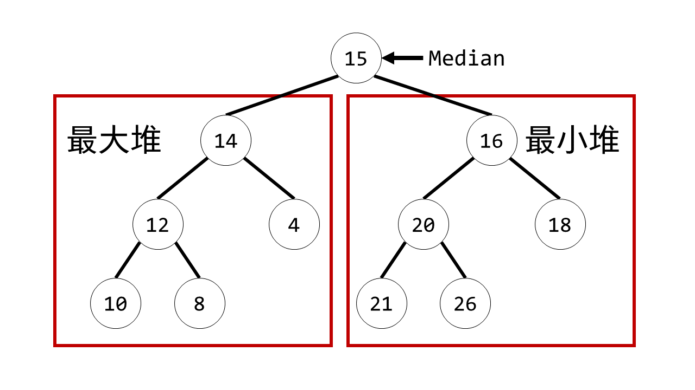

© 2019 《算法（第四版）》C# 题解 | Provided By 沈星繁
搜索解答
目前已完成到 2.5
2.4.30
上次更新：2019-02-11
题目
2.4.30 动态中位数查找。 设计一个数据类型，支持在对数时间内插入元素， 常数时间内找到中位数并在对数时间内删除中位数。 提示：用一个面向最大元素的堆再用一个面向最小元素的堆。
解答
单独用一个变量存放中位数，然后前半部分元素放在一个最大堆中，后半部分元素放在一个最小堆中。 如下图所示，注意 Median 和两个堆并没有直接连接，这里只是方便理解元素顺序。 
只要左右两个堆含有元素之差不超过 1，那么 Median 变量中存放的就是整个数组的中位数。 如果元素差大于 1，就需要进行调整， 把 Median 变量中存放的值插入到元素较少的堆， 再从元素较多的堆中取出元素放入 Median 变量，直到元素差不大于 1。
插入元素时，根据插入元素的大小插入到某一个堆中去，再做一次调整。 删除中位数时，去掉中位数，然后从元素较多的一侧堆中取元素补位，再进行一次调整。 编写代码时要注意堆中只有一个元素的情况需要特殊处理。
代码
面向中位数的堆（MedianPQ.cs）
using System;
namespace PriorityQueue
{
/// <summary>
/// 面向中位数的堆。
/// </summary>
public class MedianPQ<Key> where Key : IComparable<Key>
{
/// <summary>
/// 最大堆（保存前半段元素）。
/// </summary>
private MaxPQ<Key> maxPQ;
/// <summary>
/// 最小堆（保存后半段元素）。
/// </summary>
private MinPQ<Key> minPQ;
/// <summary>
/// 中位数。
/// </summary>
private Key median;
/// <summary>
/// 堆的大小
/// </summary>
private int n;
/// <summary>
/// 默认构造函数，构造一个面向中位数的堆。
/// </summary>
public MedianPQ()
{
this.maxPQ = new MaxPQ<Key>();
this.minPQ = new MinPQ<Key>();
this.median = default(Key);
this.n = 0;
}
/// <summary>
/// 构造一个指定容量的面向中位数的堆。
/// </summary>
/// <param name="capacity">初始容量。</param>
public MedianPQ(int capacity)
{
this.maxPQ = new MaxPQ<Key>((capacity - 1) / 2);
this.minPQ = new MinPQ<Key>((capacity - 1) / 2);
this.n = 0;
this.median = default(Key);
}
/// <summary>
/// 根据指定数组初始化面向中位数的堆。
/// </summary>
/// <param name="keys">初始数组。</param>
public MedianPQ(Key[] keys)
{
this.minPQ = new MinPQ<Key>();
this.maxPQ = new MaxPQ<Key>();
if (keys.Length == 0)
{
this.n = 0;
this.median = default(Key);
return;
}
this.n = keys.Length;
this.median = keys[0];
for (int i = 1; i < keys.Length; i++)
{
if (this.median.CompareTo(keys[i]) < 0)
this.minPQ.Insert(keys[i]);
else
this.maxPQ.Insert(keys[i]);
}
UpdateMedian();
}
/// <summary>
/// 向面向中位数的堆中插入一个元素。
/// </summary>
/// <param name="key">需要插入的元素。</param>
public void Insert(Key key)
{
if (this.n == 0)
{
this.n++;
this.median = key;
return;
}
if (key.CompareTo(this.median) < 0)
this.maxPQ.Insert(key);
else
this.minPQ.Insert(key);
this.n++;
UpdateMedian();
}
/// <summary>
/// 删除并返回中位数。
/// </summary>
/// <returns></returns>
public Key DelMedian()
{
if (IsEmpty())
throw new ArgumentOutOfRangeException("MedianPQ underflow!");
Key median = this.median;
if (this.n == 1)
{
this.n--;
this.median = default(Key);
return median;
}
// 从较大的一侧堆中取元素作为新的中位数。
if (this.minPQ.Size() > this.maxPQ.Size())
this.median = this.minPQ.DelMin();
else
this.median = this.maxPQ.DelMax();
this.n--;
return median;
}
/// <summary>
/// 获得中位数。
/// </summary>
/// <returns></returns>
public Key Median() => this.median;
/// <summary>
/// 判断堆是否为空。
/// </summary>
/// <returns></returns>
public bool IsEmpty() => this.n == 0;
/// <summary>
/// 更新中位数的值。
/// </summary>
private void UpdateMedian()
{
// 根据两个堆的大小调整中位数
while (this.maxPQ.Size() - this.minPQ.Size() > 1)
{
this.minPQ.Insert(this.median);
this.median = this.maxPQ.DelMax();
}
while (this.minPQ.Size() - this.maxPQ.Size() > 1)
{
this.maxPQ.Insert(this.median);
this.median = this.minPQ.DelMin();
}
}
}
}